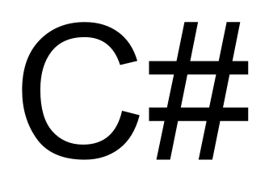
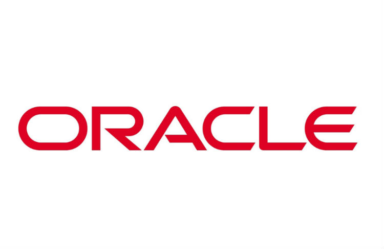
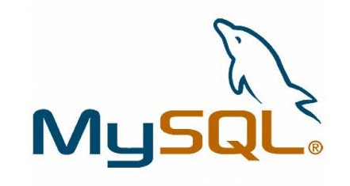
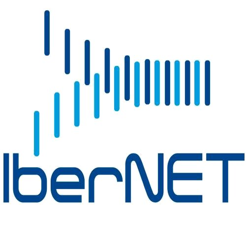

Ingénieur
Son rôle :
Concevoir, développer et assurer le suivi des applications destinées au système.Ses missions :
 Analyse et formalisation des besoins des utilisateurs. Rédaction des cahiers des charges / documentation Conception et développement d'une architecture logicielle. Mise en production et suivi des exigences. Respect des normes et des standards. Suivit des travaux (développement, tests). Tests du fonctionnement. Vérification de l'intégration du développement. Rédaction des spécifications techniques.
Analyse et formalisation des besoins des utilisateurs. Rédaction des cahiers des charges / documentation Conception et développement d'une architecture logicielle. Mise en production et suivi des exigences. Respect des normes et des standards. Suivit des travaux (développement, tests). Tests du fonctionnement. Vérification de l'intégration du développement. Rédaction des spécifications techniques.Département NTIC (nouvelles technologies de l'information et de la communication).
Technologies utilisées :






Commercial
Son rôle :
Développeur du Chiffre d'Affaire et de la marge de l'entreprise.Ses missions :
Rencontre et prise de contact constant avec la clientèle.Analyse des problèmes et des besoins en termes de produits, de prix, de serviçe, des clients.Prospection auprès de futurs clients.Négociation des prix des produits et des services.Participation au recrutement des futurs salariés.Fidélisation / démarche commerciale auprès des clients.Les qualités attendues :
Avoir un bon relationnel et être à l'écoute des clients et des collaborateurs.Avoir une bonne capacité d'écoute pour cerner efficacement les besoins du client.Etre capable de développer un argumentaire cohérent et savoir se montrer persuasif.Avoir une excellente présentation et une bonne élocution pour obtenir la confiance des futurs clients.Etre dynamique, organisé et déterminé.Consultant technique SAP

Son rôle :
Assurer l'implémentation de l'outil SAP, progiciel de gestion intégré au sein des sièges sociaux des sociétés clientes.Ses missions :
Analyse des processus et des métiers du client. Évaluation des besoins des utilisateurs-clés. Détermination des fonctionnalités standards SAP et des fonctionnalités spécifiques. Reprise des données ABAP et outil SAP. Paramétrage des fonctionnalités existantes en fonction des processus du client. Développement des fonctionnalités spécifiques. Tests du fonctionnement. Rédaction des rapports d’étapes. Mise en place de progiciels de manière opérationnelle et formation auprès des utilisateurs.Département ERP(entreprise ressource plannig).
Téchnologies utilisées :
Consultant BI : technicien support
Son rôle :
Etre l'interlocuteur principal des utilisateurs afin d'assurer le bon fonctionnement et les évolutions des applications existantes nécessaires à la bonne marche de l'entreprise.Ses missions :
Analyser et formaliser les besoins des utilisateurs. Développer de nouveaux packs Cognos. Faire évoluer les packs existants. Maintenir l'ensemble du Datawarehouse Gerflor (commercial/logistique/production/qualité/RH) Réaliser des interfaces ETL (DataManager, DataStage). Animer/former les utilisateurs qui assurent le support niveau 1 sur Cognos. Rédaction des rapports d’étapes. Mise en place de progiciels de manière opérationnelle et formation auprès des utilisateurs.Département ERP(entreprise ressource plannig).
Les Perspectives :
Le consultant en Business Intelligence a une fonction essentielle au sein des Sociétés de Services spécialisées en conseil, intégration et développement ainsi que chez les R&D des éditeurs de progiciels de petite à grande taille. Le métier de consultant en Business Intelligence évoluera avec l’introduction de nouvelles technologies, des socles applicatifs (ERP) et de la mobilité et des besoins de sécurisation des applications.
Consultant support fonctionnel
Son rôle :
Accompagner son client dans son processus de modernisation et de développement technologique.Ses missions :
audit fonctionnel et organisationnel. Participer à la rédaction du cahier des charges et à la sélection des prestataires. Support à la mise en œuvre du projet. Test et recette fonctionnelle. Validation et mise en production. Conduite du changement et formation des utilisateurs.Département ERP(entreprise ressource plannig).
Les qualités attendues :
Connaître les processus métiers.Maîtriser les ERP du marché.Avouir une culture technologique.